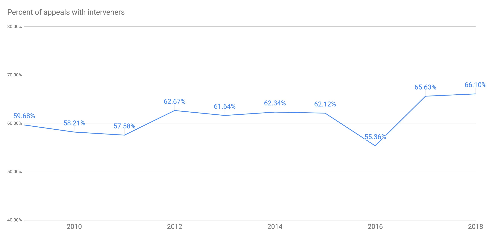
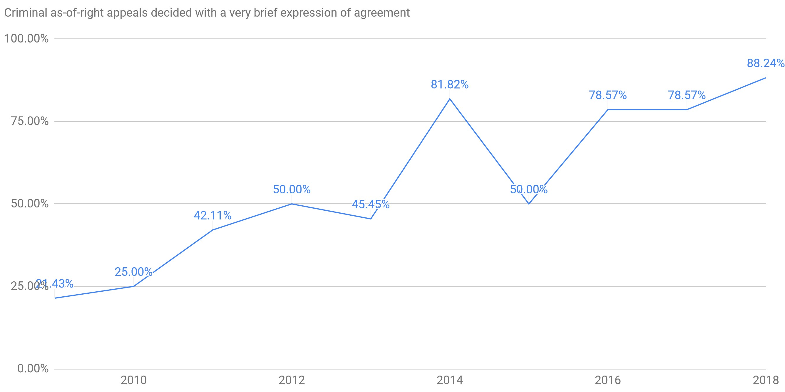
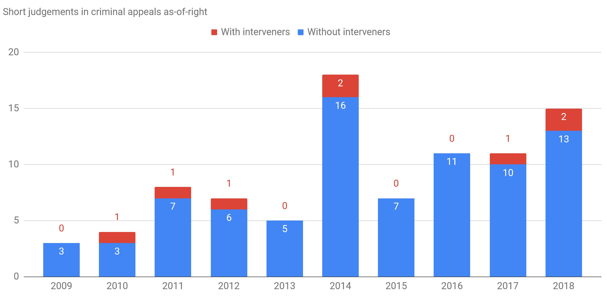
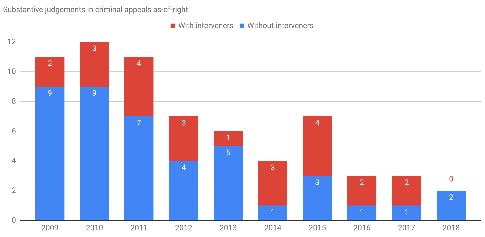
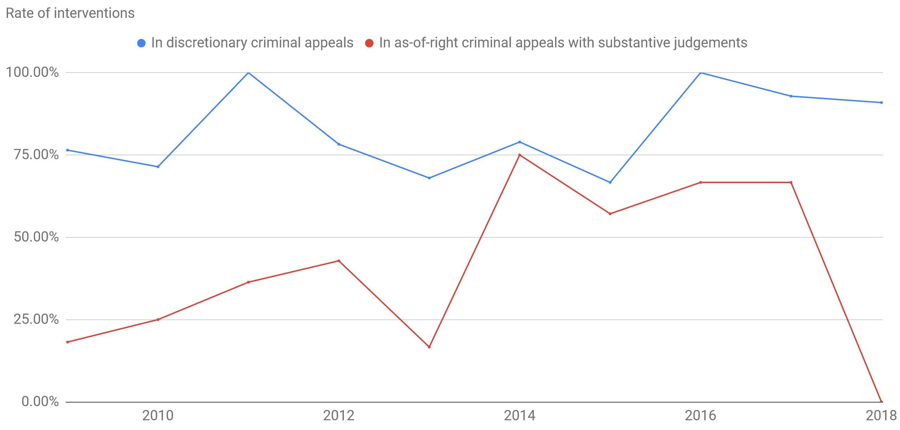

Interveners at the Supreme Court of Canada: Revisited (2009–2018)
Interveners revisited
I previously wrote about interveners at the Supreme Court of Canada here. (Interveners, like amici curiae in the US, are third parties that provide supplemental arguments in a case.) In that analysis, I observed that as-of-right appeals attracted many fewer interveners than did discretionary appeals. That was almost two years ago, so it is time for an update. This updated analysis is based on a more robust and complete collection of data spanning 2009–2018.
The main takeaways:
- The rate of interventions has increased slightly over the past ten years: from about 60% to about 66%.
- The court has been increasingly willing to dispose of cases in as-of-right criminal appeals with very brief judgments that do little more than express agreement with one of the decisions from the lower court.
- The cases that are disposed of in the manner just described (very brief judgments) are also the cases that tend to attract fewer interveners. As-of-right criminal appeals that result in more lengthy, substantive reasons seem to attract interveners at a rate closer to that of criminal appeals on the discretionary docket, but there may still be a gap.
Background: as-of-right appeals
Most of the caseload at the Supreme Court of Canada consists of discretionary appeals: the appellant requests that their appeal be heard and the Court decides whether they will hear the case. But, about 20–25% of the caseload at the Supreme Court of Canada consists of appeals that are heard “as of right”—automatically. As-of-right appeals generally involve indictable criminal offenses where one of the judges at the lower court disagreed with their court’s decision.
Overall intervention rate

Keeping it short

If the Court’s decision to dispose of a case with a very short, single-paragraph judgment signals that the case did not present any complex issues, that might explain some of the discrepancy between interveners in as-of-right criminal appeals and other appeals.
To give a sense of what these short judgments look like, here is an example from R v Cody, 2017 SCC 25.
The judgment of the Court was delivered orally by
[1] Abella J.—A majority of this Court is of the view that the appeal should be allowed substantially for the reasons of Hoegg J.A.
[2] Justice Côté would dismiss the appeal substantially for the reasons of the majority in the Court of Appeal.
This trend has been observed and criticized elsewhere.,


It is not possible to tell whether interveners cause the Court to deliver a more substantive judgment or whether there is a confounding cause. Perhaps appeals that present more complex issues simultaneously attract interveners and also demand a more substantive judgment.
A source familiar with public-interest interveners listed various factors that they consider before intervening: Do they have the capacity in the short time-frame? Do they have subject-area expertise? Is there a matter of policy that exceeds the arguments being made by the actual parties in the case? Is there a risk that poor reasoning in this case will be a problem in future cases?
This list doesn’t help tease apart the causation. A public-interest intervener might introduce issues into the case that would have not otherwise been addressed, causing the court to release more substantive reasons. Or, they might tend to intervene when those issues are already apparent and will be addressed regardless, with the public-interest interveners just making sure that their particular perspective on the issue is heard.
Still a gap?
But even within this group of as-of-right criminal appeals that yield substantive judgments, the proportion of appeals that attract interveners still seems to lag behind the proportion of discretionary criminal appeals that attract interveners.

The data
I’ve published the Python code that I used to retrieve and clean up the raw data from the Supreme Court’s website. I’ve also published the cleaned-up data in a Google Spreadsheet. It doesn’t contain my own coding for short/substantive decisions, but it should be a good starting point for any research or analysis that you want to do. I’ve also reproduced that same data below in what I hope is an easy-to-explore table format. For grouping into years, I’ve relied on the year from the neutral citation.
If you want slightly different data extracted or to have it in a different format, just get in touch and I can help you out.
This data is not an exact reproduction of what you’ll see on the Supreme Court’s website. The data from the Supreme Court doesn’t use a consistent name for each intervener (e.g. “Chartered Professional Accountants of Canada” and “Chartered Professional Accountants Canada”) and there are even some spelling errors (e.g. “British Columbia Civil Liberties Asssociation”). Often, several entities intervene together (e.g. “Dairy Farmers of Canada, Egg Farmers of Canada, Chicken Farmers of Canada, Turkey Farmers of Canada, Canadian Hatching Egg Producers”). In the dataset that I’ve provided, these entities are separated, and every entity is referred to consistently across all appeals that they intervene in. This should help if you want to do any aggregation or counting. This file shows the sets of interveners that are considered equivalent and also those that are separated out of lists of interveners.
Please let me know if you notice any interveners that are not named consistently in this dataset of if I’ve chosen an incorrect name as the canonical name.
2009
| Appeals decided | Appeals with interveners | Appeals as of right | Appeals as of right with interventions |
|---|---|---|---|
| 62 | 37 | 14 | 2 |
Note: In the tables below, “A.o.R” means “as of right”.
| Citation | Crim? | A.o.R.? | Interveners | Details |
|---|---|---|---|---|
| Lipson v. Canada, 2009 SCC 1 | [1] | |||
| R. v. Strecko, 2009 SCC 2 | crim. | a.o.r. | [1] | |
| R. v. McNeil, 2009 SCC 3 | crim. |
Details: [1] | [1] | |
| R. v. Khela, 2009 SCC 4 | crim. |
| [1] [2] | |
| R. v. Smith, 2009 SCC 5 | crim. |
| [1] [2] | |
| Shafron v. KRG Insurance Brokers (Western) Inc., 2009 SCC 6 | [1] | |||
| Ravndahl v. Saskatchewan, 2009 SCC 7 |
Details: [1] | [1] | ||
| DesRochers v. Canada (Industry), 2009 SCC 8 |
Details: [1] | [1] | ||
| Ermineskin Indian Band and Nation v. Canada, 2009 SCC 9 |
| [1] [2] | ||
| Rick v. Brandsema, 2009 SCC 10 |
Details: [1] | [1] | ||
| Teck Cominco Metals Ltd. v. Lloyd’s Underwriters, 2009 SCC 11 | [1] | |||
| Canada (Citizenship and Immigration) v. Khosa, 2009 SCC 12 |
Details: [1] | [1] | ||
| R. v. Royz, 2009 SCC 13 | crim. | a.o.r. | [1] | |
| R. v. S.J.L., 2009 SCC 14 | crim. |
Details: [1] | [1] | |
| B.M.P. Global Distribution Inc. v. Bank of Nova Scotia, 2009 SCC 15 | [1] | |||
| Canada Post Corp. v. Lépine, 2009 SCC 16 |
Details: [1] | [1] | ||
| R. v. Patrick, 2009 SCC 17 | crim. | a.o.r. |
Details: [1] | [1] |
| R. v. Laboucan, 2009 SCC 18 | crim. | a.o.r. | [1] | |
| Chatterjee v. Ontario (Attorney General), 2009 SCC 19 |
Details: [1] | [1] | ||
| United Parcel Service Canada Ltd. v. Canada, 2009 SCC 20 | [1] | |||
| R. v. Middleton, 2009 SCC 21 | crim. | [1] | ||
| R. v. Van, 2009 SCC 22 | crim. | a.o.r. | [1] | |
| R. v. Craig, 2009 SCC 23 | crim. |
Details: [1] | [1] | |
| R. v. Ouellette, 2009 SCC 24 | crim. |
Details: [1] | [1] | |
| R. v. Nguyen, 2009 SCC 25 | crim. |
Details: [1] | [1] | |
| R. v. Godin, 2009 SCC 26 | crim. | a.o.r. | [1] | |
| R. v. Ellard, 2009 SCC 27 | crim. | a.o.r. | [1] | |
| R. v. Griffin, 2009 SCC 28 | crim. | a.o.r. | [1] [2] | |
| Caisse populaire Desjardins de l’Est de Drummond v. Canada, 2009 SCC 29 | [1] | |||
| A.C. v. Manitoba (Director of Child and Family Services), 2009 SCC 30 |
Details: [1] | [1] | ||
| Greater Vancouver Transportation Authority v. Canadian Federation of Students—British Columbia Component, 2009 SCC 31 |
Details: [1] | [1] | ||
| R. v. Grant, 2009 SCC 32 | crim. |
Details: [1] | [1] | |
| R. v. Suberu, 2009 SCC 33 | crim. |
Details: [1] | [1] | |
| R. v. Harrison, 2009 SCC 34 | crim. | a.o.r. |
Details: [1] | [1] |
| R. v. Shepherd, 2009 SCC 35 | crim. |
Details: [1] | [1] | |
| R. v. Layton, 2009 SCC 36 | crim. | a.o.r. | [1] | |
| Alberta v. Hutterian Brethren of Wilson Colony, 2009 SCC 37 |
Details: [1] | [1] | ||
| R. v. Bjelland, 2009 SCC 38 | crim. | a.o.r. | [1] | |
| Nolan v. Kerry (Canada) Inc., 2009 SCC 39 |
Details: [1] | [1] | ||
| Bell Canada v. Bell Aliant Regional Communications, 2009 SCC 40 |
| [1] [2] | ||
| United States of America v. Anekwu, 2009 SCC 41 | crim. | [1] | ||
| R. v. Jaw, 2009 SCC 42 | crim. | a.o.r. | [1] | |
| Marcotte v. Longueuil (City), 2009 SCC 43 |
| [1] [2] | ||
| Breslaw v. Montreal (City), 2009 SCC 44 | [1] | |||
| R. v. Last, 2009 SCC 45 | crim. | a.o.r. | [1] | |
| Canada (Justice) v. Fischbacher, 2009 SCC 46 | crim. | [1] | ||
| Nguyen v. Quebec (Education, Recreation and Sports), 2009 SCC 47 |
| [1] [2] | ||
| Galambos v. Perez, 2009 SCC 48 | [1] | |||
| Quebec (Revenue) v. Caisse populaire Desjardins de Montmagny, 2009 SCC 49 |
| [1] [2] [3] | ||
| Northrop Grumman Overseas Services Corp. v. Canada (Attorney General), 2009 SCC 50 | [1] | |||
| Miazga v. Kvello Estate, 2009 SCC 51 |
Details: [1] | [1] | ||
| R. v. Basi, 2009 SCC 52 | crim. |
Details: [1] | [1] | |
| Consolidated Fastfrate Inc. v. Western Canada Council of Teamsters, 2009 SCC 53 |
Details: [1] | [1] | ||
| Plourde v. Wal-Mart Canada Corp., 2009 SCC 54 |
Details: [1] | [1] | ||
| Desbiens v. Wal-Mart Canada Corp., 2009 SCC 55 |
Details: [1] | [1] | ||
| R. v. Legare, 2009 SCC 56 | crim. |
Details: [1] | [1] | |
| R. v. Burke, 2009 SCC 57 | crim. | a.o.r. | [1] | |
| R. v. Dudley, 2009 SCC 58 | crim. |
Details: [1] | [1] | |
| Co-operators Life Insurance Co. v. Gibbens, 2009 SCC 59 |
Details: [1] | [1] | ||
| R. v. Bird, 2009 SCC 60 | crim. | [1] | ||
| Grant v. Torstar Corp., 2009 SCC 61 |
Details: [1] | [1] | ||
| Quan v. Cusson, 2009 SCC 62 |
Details: [1] | [1] |
2010
| Appeals decided | Appeals with interveners | Appeals as of right | Appeals as of right with interventions |
|---|---|---|---|
| 67 | 39 | 18 | 6 |
| Citation | Crim? | A.o.R.? | Interveners | Details |
|---|---|---|---|---|
| R. v. J.Z.S., 2010 SCC 1 | crim. |
Details: [1] | [1] | |
| MiningWatch Canada v. Canada (Fisheries and Oceans), 2010 SCC 2 |
Details: [1] | [1] | ||
| Canada (Prime Minister) v. Khadr, 2010 SCC 3 |
Details: [1] | [1] | ||
| Tercon Contractors Ltd. v. British Columbia (Transportation and Highways), 2010 SCC 4 |
Details: [1] | [1] | ||
| Fullowka v. Pinkerton’s of Canada Ltd., 2010 SCC 5 |
Details: [1] | [1] | ||
| R. v. Nasogaluak, 2010 SCC 6 | crim. |
Details: [1] | [1] | |
| R. v. Beaulieu, 2010 SCC 7 | crim. | a.o.r. | [1] | |
| R. v. Morelli, 2010 SCC 8 | crim. | a.o.r. | [1] | |
| R. v. Baker, 2010 SCC 9 | crim. | a.o.r. | [1] | |
| R. v. Cunningham, 2010 SCC 10 |
Details: [1] | [1] | ||
| Reference re Broome v. Prince Edward Island, 2010 SCC 11 | a.o.r. |
Details: [1] | [1] | |
| R. v. Laboucan, 2010 SCC 12 | crim. | a.o.r. | [1] | |
| R. v. Briscoe, 2010 SCC 13 | crim. |
Details: [1] | [1] | |
| Montréal (City) v. Montreal Port Authority, 2010 SCC 14 |
| [1] [2] | ||
| R. v. Szczerbaniwicz, 2010 SCC 15 | crim. | a.o.r. | [1] | |
| R. v. National Post, 2010 SCC 16 | crim. |
Details: [1] | [1] | |
| Quebec (Attorney General) v. Moses, 2010 SCC 17 |
Details: [1] | [1] | ||
| R. v. Hurley, 2010 SCC 18 | crim. | a.o.r. | [1] | |
| Yugraneft Corp. v. Rexx Management Corp., 2010 SCC 19 |
Details: [1] | [1] | ||
| R. v. S.G.T., 2010 SCC 20 | crim. | [1] | ||
| Toronto Star Newspapers Ltd. v. Canada, 2010 SCC 21 | crim. |
| [1] [2] | |
| R. v. Conway, 2010 SCC 22 |
Details: [1] | [1] | ||
| Ontario (Public Safety and Security) v. Criminal Lawyers’ Association, 2010 SCC 23 |
Details: [1] | [1] | ||
| R. v. Nolet, 2010 SCC 24 | crim. | a.o.r. | [1] | |
| R. v. Levigne, 2010 SCC 25 | crim. | a.o.r. | [1] | |
| R. v. Shea, 2010 SCC 26 | crim. | [1] | ||
| Vancouver (City) v. Ward, 2010 SCC 27 |
Details: [1] | [1] | ||
| Syndicat de la fonction publique du Québec v. Quebec (Attorney General), 2010 SCC 28 |
| [1] [2] | ||
| Syndicat des professeurs du Cégep de Ste-Foy v. Quebec (Attorney General), 2010 SCC 29 |
Details: [1] | [1] | ||
| Syndicat des professeurs et des professeures de l’Université du Québec à Trois-Rivières v. Université du Québec à Trois-Rivières, 2010 SCC 30 |
Details: [1] | [1] | ||
| R. v. Cornell, 2010 SCC 31 | crim. | a.o.r. |
Details: [1] | [1] |
| R. v. Pickton, 2010 SCC 32 | crim. | a.o.r. | [1] | |
| Progressive Homes Ltd. v. Lombard General Insurance Co. of Canada, 2010 SCC 33 | [1] | |||
| Burke v. Hudson’s Bay Co., 2010 SCC 34 | [1] | |||
| R. v. Sinclair, 2010 SCC 35 | crim. |
Details: [1] | [1] | |
| R. v. McCrimmon, 2010 SCC 36 | crim. |
Details: [1] | [1] | |
| R. v. Willier, 2010 SCC 37 | crim. |
Details: [1] | [1] | |
| Quebec (Attorney General) v. Lacombe, 2010 SCC 38 |
Details: [1] | [1] | ||
| Quebec (Attorney General) v. Canadian Owners and Pilots Association, 2010 SCC 39 |
Details: [1] | [1] | ||
| Kuwait Airways Corp. v. Iraq, 2010 SCC 40 | [1] | |||
| Globe and Mail v. Canada (Attorney General), 2010 SCC 41 |
| [1] [2] [3] | ||
| R. v. Allen, 2010 SCC 42 | crim. | a.o.r. | [1] | |
| Rio Tinto Alcan Inc. v. Carrier Sekani Tribal Council, 2010 SCC 43 |
Details: [1] | [1] | ||
| Christensen v. Roman Catholic Archbishop of Québec, 2010 SCC 44 | [1] | |||
| NIL/TU,O Child and Family Services Society v. B.C. Government and Service Employees’ Union, 2010 SCC 45 |
Details: [1] | [1] | ||
| Communications, Energy and Paperworkers Union of Canada v. Native Child and Family Services of Toronto, 2010 SCC 46 |
Details: [1] | [1] | ||
| Bank of Montreal v. Innovation Credit Union, 2010 SCC 47 | [1] | |||
| Royal Bank of Canada v. Radius Credit Union Ltd., 2010 SCC 48 | [1] | |||
| R. v. Lutoslawski, 2010 SCC 49 | crim. | a.o.r. | [1] | |
| R. v. Imoro, 2010 SCC 50 | crim. | a.o.r. |
Details: [1] | [1] |
| de Montigny v. Brossard (Succession), 2010 SCC 51 |
Details: [1] | [1] | ||
| R. v. Lee, 2010 SCC 52 | crim. | a.o.r. | [1] | |
| Beckman v. Little Salmon/Carmacks First Nation, 2010 SCC 53 |
Details: [1] | [1] | ||
| R. v. Hay, 2010 SCC 54 | crim. | [1] | ||
| R. v. Gomboc, 2010 SCC 55 | crim. | a.o.r. |
Details: [1] | [1] |
| Németh v. Canada (Justice), 2010 SCC 56 | crim. |
Details: [1] | [1] | |
| Gavrila v. Canada (Justice), 2010 SCC 57 | crim. |
Details: [1] | [1] | |
| R. v. Tran, 2010 SCC 58 | crim. | a.o.r. |
Details: [1] | [1] |
| R. v. White, 2010 SCC 59 | crim. | [1] | ||
| Century Services Inc. v. Canada (Attorney General), 2010 SCC 60 | [1] | |||
| Reference re Assisted Human Reproduction Act, 2010 SCC 61 | a.o.r. |
Details: [1] | [1] | |
| Canada (Attorney General) v. TeleZone Inc., 2010 SCC 62 | [1] | |||
| Canada (Attorney General) v. McArthur, 2010 SCC 63 |
Details: [1] | [1] | ||
| Parrish & Heimbecker Ltd. v. Canada (Agriculture and Agri-Food), 2010 SCC 64 | [1] | |||
| Nu-Pharm Inc. v. Canada (Attorney General), 2010 SCC 65 | [1] | |||
| Canadian Food Inspection Agency v. Professional Institute of the Public Service of Canada, 2010 SCC 66 | [1] | |||
| Manuge v. Canada, 2010 SCC 67 | [1] |
2011
| Appeals decided | Appeals with interveners | Appeals as of right | Appeals as of right with interventions |
|---|---|---|---|
| 66 | 38 | 21 | 6 |
| Citation | Crim? | A.o.R.? | Interveners | Details |
|---|---|---|---|---|
| Celgene Corp. v. Canada (Attorney General), 2011 SCC 1 | [1] | |||
| Canadian Broadcasting Corp. v. Canada (Attorney General), 2011 SCC 2 |
Details: [1] | [1] | ||
| Canadian Broadcasting Corp. v. The Queen, 2011 SCC 3 |
Details: [1] | [1] | ||
| R. v. Bruce, 2011 SCC 4 | crim. | a.o.r. | [1] | |
| R. v. Caron, 2011 SCC 5 |
Details: [1] | [1] | ||
| R. v. Ahmad, 2011 SCC 6 | crim. |
Details: [1] | [1] | |
| Smith v. Alliance Pipeline Ltd., 2011 SCC 7 |
Details: [1] | [1] | ||
| R. v. Miljevic, 2011 SCC 8 | crim. | a.o.r. | [1] | |
| Bou Malhab v. Diffusion Métromédia CMR inc., 2011 SCC 9 |
Details: [1] | [1] | ||
| Kerr v. Baranow, 2011 SCC 10 | [1] [2] | |||
| Québec (Attorney General) v. Canada, 2011 SCC 11 | a.o.r. | [1] | ||
| Withler v. Canada (Attorney General), 2011 SCC 12 |
Details: [1] | [1] | ||
| R. v. White, 2011 SCC 13 | crim. | a.o.r. | [1] | |
| R. v. S.D., 2011 SCC 14 | crim. | a.o.r. | [1] | |
| Seidel v. TELUS Communications Inc., 2011 SCC 15 |
Details: [1] | [1] | ||
| R. v. St-Onge, 2011 SCC 16 | crim. | a.o.r. | [1] | |
| R. v. J.A.A., 2011 SCC 17 | crim. | a.o.r. | [1] | |
| British Columbia (Attorney General) v. Malik, 2011 SCC 18 | [1] | |||
| R. v. Reynolds, 2011 SCC 19 | crim. | a.o.r. | [1] | |
| Ontario (Attorney General) v. Fraser, 2011 SCC 20 |
Details: [1] | [1] | ||
| R. v. Loewen, 2011 SCC 21 | crim. | a.o.r. | [1] | |
| R. v. V.Y., 2011 SCC 22 | crim. | a.o.r. |
Details: [1] | [1] |
| Sharbern Holding Inc. v. Vancouver Airport Centre Ltd., 2011 SCC 23 | [1] | |||
| Alberta v. Elder Advocates of Alberta Society, 2011 SCC 24 |
Details: [1] | [1] | ||
| Canada (Information Commissioner) v. Canada (Minister of National Defence), 2011 SCC 25 |
| [1] [2] [3] [4] | ||
| i Trade Finance Inc. v. Bank of Montreal, 2011 SCC 26 | [1] | |||
| Masterpiece Inc. v. Alavida Lifestyles Inc., 2011 SCC 27 |
Details: [1] | [1] | ||
| R. v. J.A., 2011 SCC 28 | crim. | a.o.r. |
Details: [1] | [1] |
| R. v. O’Brien, 2011 SCC 29 | crim. | a.o.r. | [1] | |
| Canada (Attorney General) v. Mavi, 2011 SCC 30 |
Details: [1] | [1] | ||
| R. v. E.M.W., 2011 SCC 31 | crim. | a.o.r. | [1] | |
| R. v. Campbell, 2011 SCC 32 | crim. | a.o.r. |
Details: [1] | [1] |
| Aecon Buildings v. Stephenson Engineering Ltd., 2011 SCC 33 | [1] | |||
| R. v. Nixon, 2011 SCC 34 | crim. |
Details: [1] | [1] | |
| Schreyer v. Schreyer, 2011 SCC 35 | [1] | |||
| Canada Trustco Mortgage Co. v. Canada, 2011 SCC 36 | [1] | |||
| Alberta (Aboriginal Affairs and Northern Development) v. Cunningham, 2011 SCC 37 |
Details: [1] | [1] | ||
| Bastien Estate v. Canada, 2011 SCC 38 |
Details: [1] | [1] | ||
| Dubé v. Canada, 2011 SCC 39 |
Details: [1] | [1] | ||
| R. v. Sinclair, 2011 SCC 40 | crim. |
Details: [1] | [1] | |
| Kuwait Airways Corp. v. Iraq, 2011 SCC 41 | [1] | |||
| R. v. Imperial Tobacco Canada Ltd., 2011 SCC 42 |
| [1] [2] | ||
| R. v. Topp, 2011 SCC 43 | crim. |
Details: [1] | [1] | |
| Canada (Attorney General) v. PHS Community Services Society, 2011 SCC 44 | crim. |
Details: [1] | [1] | |
| R. v. J.M.H., 2011 SCC 45 | crim. |
Details: [1] | [1] | |
| R. v. Côté, 2011 SCC 46 | crim. |
Details: [1] | [1] | |
| Crookes v. Newton, 2011 SCC 47 |
Details: [1] | [1] | ||
| R. v. Katigbak, 2011 SCC 48 | crim. | a.o.r. |
Details: [1] | [1] |
| R. v. Whyte, 2011 SCC 49 | crim. | a.o.r. | [1] | |
| R. v. Dorfer, 2011 SCC 50 | crim. | a.o.r. | [1] | |
| R. v. Barros, 2011 SCC 51 | crim. | a.o.r. |
Details: [1] | [1] |
| British Columbia (Workers’ Compensation Board) v. Figliola, 2011 SCC 52 |
Details: [1] | [1] | ||
| Canada (Canadian Human Rights Commission) v. Canada (Attorney General), 2011 SCC 53 |
Details: [1] | [1] | ||
| R. v. Sarrazin, 2011 SCC 54 | crim. | a.o.r. | [1] | |
| R. v. Banwait, 2011 SCC 55 | crim. | a.o.r. | [1] | |
| Lax Kw’alaams Indian Band v. Canada (Attorney General), 2011 SCC 56 |
Details: [1] | [1] | ||
| Public Service Alliance of Canada v. Canada Post Corp., 2011 SCC 57 | [1] [2] [3] | |||
| R. v. Bouchard-Lebrun, 2011 SCC 58 | crim. |
Details: [1] | [1] | |
| Nor-Man Regional Health Authority Inc. v. Manitoba Association of Health Care Professionals, 2011 SCC 59 |
Details: [1] | [1] | ||
| Quebec (Attorney General) v. Canada (Human Resources and Social Development), 2011 SCC 60 |
Details: [1] | [1] | ||
| Alberta (Information and Privacy Commissioner) v. Alberta Teachers’ Association, 2011 SCC 61 |
Details: [1] | [1] | ||
| Newfoundland and Labrador Nurses’ Union v. Newfoundland and Labrador (Treasury Board), 2011 SCC 62 | [1] | |||
| Copthorne Holdings Ltd. v. Canada, 2011 SCC 63 | [1] | |||
| L.M.P. v. L.S., 2011 SCC 64 |
Details: [1] | [1] | ||
| R.P. v. R.C., 2011 SCC 65 | [1] | |||
| Reference re Securities Act, 2011 SCC 66 | a.o.r. |
Details: [1] | [1] |
2012
| Appeals decided | Appeals with interveners | Appeals as of right | Appeals as of right with interventions |
|---|---|---|---|
| 75 | 47 | 15 | 5 |
| Citation | Crim? | A.o.R.? | Interveners | Details |
|---|---|---|---|---|
| Toronto-Dominion Bank v. Canada, 2012 SCC 1 | [1] | |||
| Catalyst Paper Corp. v. North Cowichan (District), 2012 SCC 2 | [1] | |||
| Merck Frosst Canada Ltd. v. Canada (Health), 2012 SCC 3 |
| [1] [2] | ||
| Reference re Broadcasting Act, 2012 SCC 4 |
Details: [1] | [1] | ||
| R. v. D.A.I., 2012 SCC 5 | crim. |
Details: [1] | [1] | |
| R v. T.L.M., 2012 SCC 6 | crim. | a.o.r. | [1] | |
| S.L. v. Commission scolaire des Chênes, 2012 SCC 7 |
Details: [1] | [1] | ||
| Richard v. Time Inc., 2012 SCC 8 | [1] | |||
| Momentous.ca Corp. v. Canadian American Association of Professional Baseball Ltd., 2012 SCC 9 | [1] | |||
| Halifax (Regional Municipality) v. Nova Scotia (Human Rights Commission), 2012 SCC 10 |
Details: [1] | [1] | ||
| R. v. Eastgaard, 2012 SCC 11 | crim. | a.o.r. | [1] | |
| Doré v. Barreau du Québec, 2012 SCC 12 |
Details: [1] | [1] | ||
| R. v. Ipeelee, 2012 SCC 13 | crim. |
| [1] [2] | |
| Fundy Settlement v. Canada, 2012 SCC 14 | [1] [2] | |||
| R. v. Kociuk, 2012 SCC 15 | crim. | a.o.r. | [1] | |
| R. v. Tse, 2012 SCC 16 | crim. |
Details: [1] | [1] | |
| Club Resorts Ltd. v. Van Breda, 2012 SCC 17 |
| [1] [2] | ||
| Éditions Écosociété Inc. v. Banro Corp., 2012 SCC 18 |
Details: [1] | [1] | ||
| Breeden v. Black, 2012 SCC 19 |
Details: [1] | [1] | ||
| Calgary (City) v. Canada, 2012 SCC 20 | [1] | |||
| R. v. Jesse, 2012 SCC 21 | crim. | [1] | ||
| R. v. R.P., 2012 SCC 22 | crim. | a.o.r. | [1] | |
| Tessier Ltée v. Quebec (Commission de la santé et de la sécurité du travail), 2012 SCC 23 |
Details: [1] | [1] | ||
| R. v. Maybin, 2012 SCC 24 | crim. | a.o.r. |
Details: [1] | [1] |
| Cinar Corporation v. Robinson, 2012 SCC 25 |
| [1] [2] [3] | ||
| R. v. Roy, 2012 SCC 26 | crim. | [1] | ||
| Annapolis County District School Board v. Marshall, 2012 SCC 27 | [1] | |||
| R. v. Gibbons, 2012 SCC 28 | crim. | [1] | ||
| Halifax (Regional Municipality) v. Canada (Public Works and Government Services), 2012 SCC 29 |
Details: [1] | [1] | ||
| Westmount (City) v. Rossy, 2012 SCC 30 | [1] | |||
| R. v. Mayuran, 2012 SCC 31 | crim. | a.o.r. | [1] | |
| Clements v. Clements, 2012 SCC 32 |
Details: [1] | [1] | ||
| R. v. Venneri, 2012 SCC 33 | crim. | a.o.r. | [1] | |
| Entertainment Software Association v. Society of Composers, Authors and Music Publishers of Canada, 2012 SCC 34 |
Details: [1] | [1] | ||
| Rogers Communications Inc. v. Society of Composers, Authors and Music Publishers of Canada, 2012 SCC 35 |
Details: [1] | [1] | ||
| Society of Composers, Authors and Music Publishers of Canada v. Bell Canada, 2012 SCC 36 |
Details: [1] | [1] | ||
| Alberta (Education) v. Canadian Copyright Licensing Agency (Access Copyright), 2012 SCC 37 |
Details: [1] | [1] | ||
| Re:Sound v. Motion Picture Theatre Associations of Canada, 2012 SCC 38 |
Details: [1] | [1] | ||
| R. v. Punko, 2012 SCC 39 | crim. | [1] [2] | ||
| R. v. Vu, 2012 SCC 40 | crim. | a.o.r. | [1] | |
| R. v. Walle, 2012 SCC 41 | crim. |
Details: [1] | [1] | |
| R. v. Knott, 2012 SCC 42 | crim. | [1] | ||
| Canada v. Craig, 2012 SCC 43 | [1] | |||
| R. v. Bellusci, 2012 SCC 44 | crim. |
Details: [1] | [1] | |
| Canada (Attorney General) v. Downtown Eastside Sex Workers United Against Violence Society, 2012 SCC 45 |
Details: [1] | [1] | ||
| A.B. v. Bragg Communications Inc., 2012 SCC 46 |
Details: [1] | [1] | ||
| R. v. Mabior, 2012 SCC 47 | crim. |
Details: [1] | [1] | |
| R. v. D.C., 2012 SCC 48 | crim. |
Details: [1] | [1] | |
| R. v. Prokofiew, 2012 SCC 49 | crim. |
Details: [1] | [1] | |
| R. v. Rochon, 2012 SCC 50 | crim. | a.o.r. |
Details: [1] | [1] |
| Southcott Estates Inc. v. Toronto Catholic District School Board, 2012 SCC 51 | [1] | |||
| Canada v. GlaxoSmithKline Inc., 2012 SCC 52 | [1] | |||
| R. v. Cole, 2012 SCC 53 | crim. |
Details: [1] | [1] | |
| R. v. Picot, 2012 SCC 54 | crim. | a.o.r. | [1] | |
| Opitz v. Wrzesnewskyj, 2012 SCC 55 | a.o.r. |
Details: [1] | [1] | |
| R. v. Boudreault, 2012 SCC 56 | crim. | a.o.r. |
Details: [1] | [1] |
| R. v. St‑Onge Lamoureux, 2012 SCC 57 | crim. |
Details: [1] | [1] | |
| R. v. Dineley, 2012 SCC 58 | crim. |
Details: [1] | [1] | |
| R. v. Nedelcu, 2012 SCC 59 | crim. |
Details: [1] | [1] | |
| Teva Canada Ltd. v. Pfizer Canada Inc., 2012 SCC 60 |
Details: [1] | [1] | ||
| Moore v. British Columbia (Education), 2012 SCC 61 |
| [1] [2] | ||
| R. v. P.D.T., 2012 SCC 62 | crim. | a.o.r. | [1] | |
| R. v. D.J.W., 2012 SCC 63 | crim. | a.o.r. | [1] | |
| Canada (Attorney General) v. Kane, 2012 SCC 64 | [1] | |||
| Construction Labour Relations v. Driver Iron Inc., 2012 SCC 65 | [1] | |||
| R. v. Aucoin, 2012 SCC 66 | crim. | a.o.r. |
Details: [1] | [1] |
| Newfoundland and Labrador v. AbitibiBowater Inc., 2012 SCC 67 |
Details: [1] | [1] | ||
| Reference re Broadcasting Regulatory Policy CRTC 2010-167 and Broadcasting Order CRTC 2010-168, 2012 SCC 68 |
Details: [1] | [1] | ||
| R. v. Khawaja, 2012 SCC 69 | crim. |
Details: [1] | [1] | |
| Sriskandarajah v. United States of America, 2012 SCC 70 | crim. |
| [1] [2] | |
| Professional Institute of the Public Service of Canada v. Canada (Attorney General), 2012 SCC 71 |
Details: [1] | [1] | ||
| R. v. N.S., 2012 SCC 72 | crim. |
Details: [1] | [1] | |
| R. v. Yumnu, 2012 SCC 73 | crim. |
| [1] [2] [3] | |
| R. v. Emms, 2012 SCC 74 | crim. |
Details: [1] | [1] | |
| R. v. Davey, 2012 SCC 75 | crim. |
Details: [1] | [1] |
2013
| Appeals decided | Appeals with interveners | Appeals as of right | Appeals as of right with interventions |
|---|---|---|---|
| 73 | 45 | 11 | 1 |
| Citation | Crim? | A.o.R.? | Interveners | Details |
|---|---|---|---|---|
| R. v. Manning, 2013 SCC 1 | crim. |
Details: [1] | [1] | |
| R. v. O’Brien, 2013 SCC 2 | crim. | a.o.r. | [1] | |
| R. v. Ryan, 2013 SCC 3 | crim. |
Details: [1] | [1] | |
| R. v. Sanichar, 2013 SCC 4 | crim. | a.o.r. | [1] | |
| Quebec (Attorney General) v. A, 2013 SCC 5 |
Details: [1] | [1] | ||
| Sun Indalex Finance, LLC v. United Steelworkers, 2013 SCC 6 |
Details: [1] | [1] | ||
| R. v. Bélanger, 2013 SCC 7 | crim. | [1] | ||
| R. v. Blacklaws, 2013 SCC 8 | crim. | a.o.r. | [1] | |
| R. v. Named Person B, 2013 SCC 9 | crim. |
Details: [1] | [1] | |
| R. v. Taylor, 2013 SCC 10 | crim. | a.o.r. | [1] | |
| Saskatchewan (Human Rights Commission) v. Whatcott, 2013 SCC 11 |
Details: [1] | [1] | ||
| R. v. J.F., 2013 SCC 12 | crim. |
Details: [1] | [1] | |
| Antrim Truck Centre Ltd. v. Ontario (Transportation), 2013 SCC 13 |
Details: [1] | [1] | ||
| Manitoba Metis Federation Inc. v. Canada (Attorney General), 2013 SCC 14 |
Details: [1] | [1] | ||
| R. v. Pham, 2013 SCC 15 | crim. |
Details: [1] | [1] | |
| R. v. TELUS Communications Co., 2013 SCC 16 | crim. |
Details: [1] | [1] | |
| R. v. Mailhot, 2013 SCC 17 | crim. | a.o.r. | [1] | |
| Ediger v. Johnston, 2013 SCC 18 | [1] | |||
| Penner v. Niagara (Regional Police Services Board), 2013 SCC 19 |
Details: [1] | [1] | ||
| R. v. Lévesque, 2013 SCC 20 | crim. | [1] | ||
| R. v. Murphy, 2013 SCC 21 | crim. | a.o.r. | [1] | |
| R. v. W.H., 2013 SCC 22 | crim. | [1] | ||
| R. v. MacIntosh, 2013 SCC 23 | crim. |
Details: [1] | [1] | |
| R. v. G.M., 2013 SCC 24 | crim. | a.o.r. | [1] | |
| R. v. Levkovic, 2013 SCC 25 | crim. |
Details: [1] | [1] | |
| Behn v. Moulton Contracting Ltd., 2013 SCC 26 |
Details: [1] | [1] | ||
| R. v. Buzizi, 2013 SCC 27 | crim. | a.o.r. | [1] | |
| R. v. A.D.H., 2013 SCC 28 | crim. |
Details: [1] | [1] | |
| Daishowa‑Marubeni International Ltd. v. Canada, 2013 SCC 29 |
Details: [1] | [1] | ||
| Cojocaru v. British Columbia Women’s Hospital and Health Centre, 2013 SCC 30 |
Details: [1] | [1] | ||
| R. v. Ibanescu, 2013 SCC 31 | crim. | [1] | ||
| R. v. Gauthier, 2013 SCC 32 | crim. |
Details: [1] | [1] | |
| Nishi v. Rascal Trucking Ltd., 2013 SCC 33 | [1] | |||
| Communications, Energy and Paperworkers Union of Canada, Local 30 v. Irving Pulp & Paper, Ltd., 2013 SCC 34 |
Details: [1] | [1] | ||
| R. v. Baldree, 2013 SCC 35 | crim. | a.o.r. |
Details: [1] | [1] |
| Agraira v. Canada (Public Safety and Emergency Preparedness), 2013 SCC 36 |
Details: [1] | [1] | ||
| Sable Offshore Energy Inc. v. Ameron International Corp., 2013 SCC 37 | [1] | |||
| R. v. Vuradin, 2013 SCC 38 | crim. | a.o.r. | [1] | |
| Canadian National Railway Co. v. McKercher LLP, 2013 SCC 39 |
Details: [1] | [1] | ||
| Ezokola v. Canada (Citizenship and Immigration), 2013 SCC 40 |
Details: [1] | [1] | ||
| R. v. Youvarajah, 2013 SCC 41 | crim. |
Details: [1] | [1] | |
| Conseil scolaire francophone de la Colombie‑Britannique v. British Columbia, 2013 SCC 42 |
Details: [1] | [1] | ||
| Ontario v. Criminal Lawyers’ Association of Ontario, 2013 SCC 43 | crim. |
Details: [1] | [1] | |
| Marine Services International Ltd. v. Ryan Estate, 2013 SCC 44 |
Details: [1] | [1] | ||
| Payette v. Guay inc., 2013 SCC 45 | [1] | |||
| Régie des rentes du Québec v. Canada Bread Company Ltd., 2013 SCC 46 |
Details: [1] | [1] | ||
| Divito v. Canada (Public Safety and Emergency Preparedness), 2013 SCC 47 |
Details: [1] | [1] | ||
| Envision Credit Union v. Canada, 2013 SCC 48 | [1] | |||
| R. v. Chehil, 2013 SCC 49 | crim. |
Details: [1] | [1] | |
| R. v. MacKenzie, 2013 SCC 50 | crim. |
Details: [1] | [1] | |
| British Columbia (Forests) v. Teal Cedar Products Ltd., 2013 SCC 51 | [1] | |||
| Castonguay Blasting Ltd. v. Ontario (Environment), 2013 SCC 52 | crim. |
Details: [1] | [1] | |
| Cuthbertson v. Rasouli, 2013 SCC 53 |
Details: [1] | [1] | ||
| R. v. R.L., 2013 SCC 54 | crim. | [1] | ||
| R. v. Cairney, 2013 SCC 55 | crim. | [1] | ||
| R. v. Pappas, 2013 SCC 56 | crim. | a.o.r. | [1] | |
| Pro‑Sys Consultants Ltd. v. Microsoft Corporation, 2013 SCC 57 |
Details: [1] | [1] | ||
| Sun‑Rype Products Ltd. v. Archer Daniels Midland Company, 2013 SCC 58 |
Details: [1] | [1] | ||
| Infineon Technologies AG v. Option consommateurs, 2013 SCC 59 |
Details: [1] | [1] | ||
| R. v. Vu, 2013 SCC 60 | crim. |
Details: [1] | [1] | |
| R. v. Hay, 2013 SCC 61 | crim. | [1] | ||
| Alberta (Information and Privacy Commissioner) v. United Food and Commercial Workers, Local 401, 2013 SCC 62 |
Details: [1] | [1] | ||
| La Souveraine, Compagnie d’assurance générale v. Autorité des marchés financiers, 2013 SCC 63 | [1] | |||
| Katz Group Canada Inc. v. Ontario (Health and Long‑Term Care), 2013 SCC 64 | [1] [2] | |||
| Quebec (Agence du revenu) v. Services Environnementaux AES inc., 2013 SCC 65 |
| [1] [2] | ||
| Amaratunga v. Northwest Atlantic Fisheries Organization, 2013 SCC 66 |
Details: [1] | [1] | ||
| McLean v. British Columbia (Securities Commission), 2013 SCC 67 |
Details: [1] | [1] | ||
| R. v. McRae, 2013 SCC 68 | crim. | [1] | ||
| AIC Limited v. Fischer, 2013 SCC 69 | [1] | |||
| IBM Canada Limited v. Waterman, 2013 SCC 70 | [1] | |||
| Wood v. Schaeffer, 2013 SCC 71 |
Details: [1] | [1] | ||
| Canada (Attorney General) v. Bedford, 2013 SCC 72 | crim. |
Details: [1] | [1] | |
| Cinar Corporation v. Robinson, 2013 SCC 73 |
| [1] [2] [3] [4] |
2014
| Appeals decided | Appeals with interveners | Appeals as of right | Appeals as of right with interventions |
|---|---|---|---|
| 77 | 48 | 24 | 7 |
| Citation | Crim? | A.o.R.? | Interveners | Details |
|---|---|---|---|---|
| Vivendi Canada Inc. v. Dell’Aniello, 2014 SCC 1 |
Details: [1] | [1] | ||
| R. v. W.E.B., 2014 SCC 2 | crim. | [1] | ||
| R. v. MacDonald, 2014 SCC 3 | crim. | a.o.r. |
Details: [1] | [1] |
| R. v. Davis, 2014 SCC 4 | crim. | a.o.r. | [1] | |
| R. v. James, 2014 SCC 5 | crim. | a.o.r. | [1] | |
| R. v. Auclair, 2014 SCC 6 | crim. | a.o.r. |
Details: [1] | [1] |
| Hryniak v. Mauldin, 2014 SCC 7 |
Details: [1] | [1] | ||
| Bruno Appliance and Furniture, Inc. v. Hryniak, 2014 SCC 8 |
Details: [1] | [1] | ||
| R. v. Koczab, 2014 SCC 9 | crim. | a.o.r. | [1] | |
| R. v. Yelle, 2014 SCC 10 | crim. | a.o.r. | [1] | |
| Telecommunications Employees Association of Manitoba Inc. v. Manitoba Telecom Services Inc., 2014 SCC 11 | [1] | |||
| A.I. Enterprises Ltd. v. Bram Enterprises Ltd., 2014 SCC 12 |
Details: [1] | [1] | ||
| Bernard v. Canada (Attorney General), 2014 SCC 13 |
Details: [1] | [1] | ||
| R. v. Flaviano, 2014 SCC 14 | crim. | a.o.r. | [1] | |
| R. v. Sekhon, 2014 SCC 15 | crim. | a.o.r. | [1] | |
| R. v. Babos, 2014 SCC 16 | crim. | [1] | ||
| R. v. Waite, 2014 SCC 17 | crim. | a.o.r. | [1] | |
| R. v. Hogg, 2014 SCC 18 | crim. | a.o.r. | [1] | |
| R. v. Hutchinson, 2014 SCC 19 | crim. | a.o.r. |
Details: [1] | [1] |
| Canada (Attorney General) v. Whaling, 2014 SCC 20 | crim. |
Details: [1] | [1] | |
| Reference re Supreme Court Act, ss. 5 and 6, 2014 SCC 21 | a.o.r. |
Details: [1] | [1] | |
| R. v. Vokurka, 2014 SCC 22 | crim. | a.o.r. | [1] | |
| R. v. Leinen, 2014 SCC 23 | crim. | a.o.r. | [1] | |
| Mission Institution v. Khela, 2014 SCC 24 | crim. |
Details: [1] | [1] | |
| Martin v. Alberta (Workers’ Compensation Board), 2014 SCC 25 |
Details: [1] | [1] | ||
| R. v. Summers, 2014 SCC 26 | crim. |
Details: [1] | [1] | |
| R. v. Carvery, 2014 SCC 27 | crim. |
Details: [1] | [1] | |
| R. v. Clarke, 2014 SCC 28 | crim. | [1] | ||
| Peracomo Inc. v. TELUS Communications Co., 2014 SCC 29 | [1] | |||
| R. v. Jackson, 2014 SCC 30 | crim. | a.o.r. | [1] | |
| Ontario (Community Safety and Correctional Services) v. Ontario (Information and Privacy Commissioner), 2014 SCC 31 |
Details: [1] | [1] | ||
| Reference re Senate Reform, 2014 SCC 32 | a.o.r. |
Details: [1] | [1] | |
| Dionne v. Commission scolaire des Patriotes, 2014 SCC 33 |
Details: [1] | [1] | ||
| Immeubles Jacques Robitaille inc. v. Québec (City), 2014 SCC 34 | [1] | |||
| Union Carbide Canada Inc. v. Bombardier Inc., 2014 SCC 35 |
Details: [1] | [1] | ||
| John Doe v. Ontario (Finance), 2014 SCC 36 |
Details: [1] | [1] | ||
| Canada (Citizenship and Immigration) v. Harkat, 2014 SCC 37 |
Details: [1] | [1] | ||
| Stubicar v. Canada, 2014 SCC 38 | [1] | |||
| McCormick v. Fasken Martineau DuMoulin LLP, 2014 SCC 39 |
Details: [1] | [1] | ||
| Canadian National Railway Co. v. Canada (Attorney General), 2014 SCC 40 | [1] | |||
| R. v. Anderson, 2014 SCC 41 | crim. |
Details: [1] | [1] | |
| Canadian Artists’ Representation v. National Gallery of Canada, 2014 SCC 42 |
Details: [1] | [1] | ||
| R. v. Spencer, 2014 SCC 43 | crim. |
Details: [1] | [1] | |
| Tsilhqot’in Nation v. British Columbia, 2014 SCC 44 |
Details: [1] | [1] | ||
| United Food and Commercial Workers, Local 503 v. Wal‑Mart Canada Corp., 2014 SCC 45 |
Details: [1] | [1] | ||
| R. v. Quesnelle, 2014 SCC 46 | crim. |
Details: [1] | [1] | |
| R. v. Sipos, 2014 SCC 47 | crim. |
Details: [1] | [1] | |
| Grassy Narrows First Nation v. Ontario (Natural Resources), 2014 SCC 48 |
Details: [1] | [1] | ||
| Canada (Attorney General) v. Confédération des syndicats nationaux, 2014 SCC 49 | [1] | |||
| R. v. Taylor, 2014 SCC 50 | crim. | a.o.r. |
Details: [1] | [1] |
| Quebec (Commission des normes du travail) v. Asphalte Desjardins inc., 2014 SCC 51 | [1] | |||
| R. v. Hart, 2014 SCC 52 | crim. |
Details: [1] | [1] | |
| Sattva Capital Corp. v. Creston Moly Corp., 2014 SCC 53 |
Details: [1] | [1] | ||
| R. v. Mian, 2014 SCC 54 | crim. |
Details: [1] | [1] | |
| Bank of Montreal v. Marcotte, 2014 SCC 55 |
Details: [1] | [1] | ||
| Amex Bank of Canada v. Adams, 2014 SCC 56 |
Details: [1] | [1] | ||
| Marcotte v. Fédération des caisses Desjardins du Québec, 2014 SCC 57 |
Details: [1] | [1] | ||
| R. v. Mack, 2014 SCC 58 | crim. |
Details: [1] | [1] | |
| Trial Lawyers Association of British Columbia v. British Columbia (Attorney General), 2014 SCC 59 |
Details: [1] | [1] | ||
| R. v. Conception, 2014 SCC 60 | crim. |
Details: [1] | [1] | |
| R. v. Steele, 2014 SCC 61 | crim. |
Details: [1] | [1] | |
| Kazemi Estate v. Islamic Republic of Iran, 2014 SCC 62 |
Details: [1] | [1] | ||
| R. v. Mohamed, 2014 SCC 63 | crim. | a.o.r. | [1] | |
| R. v. Bouchard, 2014 SCC 64 | crim. | a.o.r. | [1] | |
| R. v. Lepine, 2014 SCC 65 | crim. | a.o.r. | [1] | |
| Imperial Oil v. Jacques, 2014 SCC 66 |
| [1] [2] | ||
| Thibodeau v. Air Canada, 2014 SCC 67 |
Details: [1] | [1] | ||
| Febles v. Canada (Citizenship and Immigration), 2014 SCC 68 |
Details: [1] | [1] | ||
| R. v. Dunn, 2014 SCC 69 | crim. | [1] | ||
| British Columbia Teachers’ Federation v. British Columbia Public School Employers’ Association, 2014 SCC 70 |
Details: [1] | [1] | ||
| Bhasin v. Hrynew, 2014 SCC 71 | [1] | |||
| Wakeling v. United States of America, 2014 SCC 72 | crim. |
Details: [1] | [1] | |
| R. v. Wills, 2014 SCC 73 | crim. | a.o.r. | [1] | |
| R. v. Day, 2014 SCC 74 | crim. | a.o.r. | [1] | |
| R. v. Wilcox, 2014 SCC 75 | crim. | a.o.r. |
Details: [1] | [1] |
| R. v. MacLeod, 2014 SCC 76 | crim. | a.o.r. | [1] | |
| R. v. Fearon, 2014 SCC 77 | crim. |
Details: [1] | [1] |
2015
| Appeals decided | Appeals with interveners | Appeals as of right | Appeals as of right with interventions |
|---|---|---|---|
| 66 | 41 | 15 | 5 |
| Citation | Crim? | A.o.R.? | Interveners | Details |
|---|---|---|---|---|
| Mounted Police Association of Ontario v. Canada (Attorney General), 2015 SCC 1 |
Details: [1] | [1] | ||
| Meredith v. Canada (Attorney General), 2015 SCC 2 |
Details: [1] | [1] | ||
| Tervita Corp. v. Canada (Commissioner of Competition), 2015 SCC 3 | [1] | |||
| Saskatchewan Federation of Labour v. Saskatchewan, 2015 SCC 4 |
Details: [1] | [1] | ||
| Carter v. Canada (Attorney General), 2015 SCC 5 |
Details: [1] | [1] | ||
| R. v. Goleski, 2015 SCC 6 | crim. |
Details: [1] | [1] | |
| Canada (Attorney General) v. Federation of Law Societies of Canada, 2015 SCC 7 |
Details: [1] | [1] | ||
| R. v. Perrone, 2015 SCC 8 | crim. | a.o.r. | [1] | |
| R. v. Grant, 2015 SCC 9 | crim. | [1] | ||
| Potter v. New Brunswick Legal Aid Services Commission, 2015 SCC 10 | [1] | |||
| R. v. Araya, 2015 SCC 11 | crim. | a.o.r. | [1] | |
| Loyola High School v. Quebec (Attorney General), 2015 SCC 12 |
Details: [1] | [1] | ||
| R. v. Sanghera, 2015 SCC 13 | crim. | a.o.r. | [1] | |
| Quebec (Attorney General) v. Canada (Attorney General), 2015 SCC 14 |
Details: [1] | [1] | ||
| R. v. Nur, 2015 SCC 15 | crim. |
| [1] [2] | |
| Mouvement laïque québécois v. Saguenay (City), 2015 SCC 16 |
Details: [1] | [1] | ||
| Carey v. Laiken, 2015 SCC 17 | [1] | |||
| Theratechnologies Inc. v. 121851 Canada Inc., 2015 SCC 18 |
Details: [1] | [1] | ||
| Zurich Insurance Co. v. Chubb Insurance Co. of Canada, 2015 SCC 19 | [1] | |||
| Sanofi-Aventis v. Apotex Inc., 2015 SCC 20 |
Details: [1] | [1] | ||
| Association des parents de l’école Rose‑des‑vents v. British Columbia (Education), 2015 SCC 21 |
Details: [1] | [1] | ||
| Quebec (Attorney General) v. Canada (Attorney General), 2015 SCC 22 | a.o.r. |
Details: [1] | [1] | |
| White Burgess Langille Inman v. Abbott and Haliburton Co., 2015 SCC 23 |
Details: [1] | [1] | ||
| Henry v. British Columbia (Attorney General), 2015 SCC 24 |
Details: [1] | [1] | ||
| Yukon Francophone School Board, Education Area #23 v. Yukon (Attorney General), 2015 SCC 25 |
Details: [1] | [1] | ||
| Bowden Institution v. Khadr, 2015 SCC 26 | crim. |
Details: [1] | [1] | |
| R. v. St-Cloud, 2015 SCC 27 | crim. |
Details: [1] | [1] | |
| R. v. Kokopenace, 2015 SCC 28 | crim. |
Details: [1] | [1] | |
| R. v. Barabash, 2015 SCC 29 | crim. | a.o.r. |
| [1] [2] |
| Kahkewistahaw First Nation v. Taypotat, 2015 SCC 30 | [1] | |||
| Canada (Attorney General) v. Barnaby, 2015 SCC 31 | crim. | [1] | ||
| Caplin v. Canada (Justice), 2015 SCC 32 | crim. | [1] | ||
| R. v. Tatton, 2015 SCC 33 | crim. | a.o.r. |
Details: [1] | [1] |
| R. v. Smith, 2015 SCC 34 | crim. | a.o.r. |
Details: [1] | [1] |
| Hinse v. Canada (Attorney General), 2015 SCC 35 |
Details: [1] | [1] | ||
| Société en commandite Place Mullins v. Services immobiliers Diane Bisson inc., 2015 SCC 36 | [1] | |||
| Strickland v. Canada (Attorney General), 2015 SCC 37 | [1] | |||
| R. v. Rodgerson, 2015 SCC 38 | crim. | a.o.r. | [1] | |
| Quebec (Commission des droits de la personne et des droits de la jeunesse) v. Bombardier Inc. (Bombardier Aerospace Training Center), 2015 SCC 39 |
Details: [1] | [1] | ||
| R. v. Simpson, 2015 SCC 40 | crim. | a.o.r. |
Details: [1] | [1] |
| Guindon v. Canada, 2015 SCC 41 |
Details: [1] | [1] | ||
| Chevron Corp. v. Yaiguaje, 2015 SCC 42 |
Details: [1] | [1] | ||
| Stuart Olson Dominion Construction Ltd. v. Structal Heavy Steel, 2015 SCC 43 | [1] | |||
| Ontario (Energy Board) v. Ontario Power Generation Inc., 2015 SCC 44 |
Details: [1] | [1] | ||
| ATCO Gas and Pipelines Ltd. v. Alberta (Utilities Commission), 2015 SCC 45 | [1] | |||
| Goodwin v. British Columbia (Superintendent of Motor Vehicles), 2015 SCC 46 |
Details: [1] | [1] | ||
| Wilson v. British Columbia (Superintendent of Motor Vehicles), 2015 SCC 47 | [1] | |||
| R. v. M.J.B., 2015 SCC 48 | crim. | a.o.r. | [1] | |
| R. v. Neville, 2015 SCC 49 | crim. | a.o.r. | [1] | |
| R. v. Singh Riar, 2015 SCC 50 | crim. | a.o.r. | [1] | |
| Alberta (Attorney General) v. Moloney, 2015 SCC 51 |
Details: [1] | [1] | ||
| 407 ETR Concession Co. v. Canada (Superintendent of Bankruptcy), 2015 SCC 52 |
Details: [1] | [1] | ||
| Saskatchewan (Attorney General) v. Lemare Lake Logging Ltd., 2015 SCC 53 |
Details: [1] | [1] | ||
| R. v. Hecimovic, 2015 SCC 54 | crim. | a.o.r. | [1] | |
| R. v. Moriarity, 2015 SCC 55 | crim. | [1] [2] [3] | ||
| Caron v. Alberta, 2015 SCC 56 |
Details: [1] | [1] | ||
| Canadian Broadcasting Corp. v. SODRAC 2003 Inc., 2015 SCC 57 |
Details: [1] | [1] | ||
| B010 v. Canada (Citizenship and Immigration), 2015 SCC 58 |
| [1] [2] [3] [4] | ||
| R. v. Appulonappa, 2015 SCC 59 | crim. |
Details: [1] | [1] | |
| Canadian Imperial Bank of Commerce v. Green, 2015 SCC 60 |
| [1] [2] [3] | ||
| Kanthasamy v. Canada (Citizenship and Immigration), 2015 SCC 61 |
Details: [1] | [1] | ||
| M.M. v. United States of America, 2015 SCC 62 | crim. |
Details: [1] | [1] | |
| R. v. McKenna, 2015 SCC 63 | crim. | a.o.r. | [1] | |
| R. v. Lacasse, 2015 SCC 64 | crim. |
Details: [1] | [1] | |
| R. v. Riesberry, 2015 SCC 65 | crim. | a.o.r. | [1] | |
| S.H. v. Quebec (Emploi et Solidarité sociale), 2015 SCC 66 | [1] |
2016
| Appeals decided | Appeals with interveners | Appeals as of right | Appeals as of right with interventions |
|---|---|---|---|
| 56 | 31 | 14 | 2 |
| Citation | Crim? | A.o.R.? | Interveners | Details |
|---|---|---|---|---|
| Canadian Pacific Railway Co. v. Canada (Attorney General), 2016 SCC 1 |
Details: [1] | [1] | ||
| R. v. Seruhungo, 2016 SCC 2 | crim. | a.o.r. | [1] | |
| R. v. Spicer, 2016 SCC 3 | crim. | a.o.r. | [1] | |
| Carter v. Canada (Attorney General), 2016 SCC 4 |
Details: [1] | [1] | ||
| R. v. Meer, 2016 SCC 5 | crim. | a.o.r. | [1] | |
| R. v. Gagnon, 2016 SCC 6 | crim. | a.o.r. | [1] | |
| R. v. Newman, 2016 SCC 7 | crim. | a.o.r. | [1] | |
| Commission scolaire de Laval v. Syndicat de l’enseignement de la région de Laval, 2016 SCC 8 |
Details: [1] | [1] | ||
| Brine v. Industrial Alliance Insurance and Financial Services Inc., 2016 SCC 9 | [1] | |||
| R. v. Knapczyk, 2016 SCC 10 | crim. | a.o.r. | [1] [2] | |
| R. v. Borowiec, 2016 SCC 11 | crim. | a.o.r. |
Details: [1] | [1] |
| Daniels v. Canada (Indian Affairs and Northern Development), 2016 SCC 12 |
Details: [1] | [1] | ||
| R. v. Lloyd, 2016 SCC 13 | crim. |
Details: [1] | [1] | |
| R. v. Safarzadeh‑Markhali, 2016 SCC 14 | crim. |
Details: [1] | [1] | |
| World Bank Group v. Wallace, 2016 SCC 15 | crim. |
Details: [1] | [1] | |
| R. v. Shaoulle, 2016 SCC 16 | crim. | a.o.r. | [1] | |
| R. v. Laliberté, 2016 SCC 17 | crim. | a.o.r. | [1] | |
| Krayzel Corp. v. Equitable Trust Co., 2016 SCC 18 | [1] | |||
| Heritage Capital Corp. v. Equitable Trust Co., 2016 SCC 19 | [1] | |||
| Canada (Attorney General) v. Chambre des notaires du Québec, 2016 SCC 20 |
Details: [1] | [1] | ||
| Canada (National Revenue) v. Thompson, 2016 SCC 21 |
Details: [1] | [1] | ||
| R. v. D.L.W., 2016 SCC 22 | crim. | a.o.r. |
Details: [1] | [1] |
| Rogers Communications Inc. v. Châteauguay (City), 2016 SCC 23 |
Details: [1] | [1] | ||
| R. v. Saeed, 2016 SCC 24 | crim. |
Details: [1] | [1] | |
| British Columbia (Workers’ Compensation Appeal Tribunal) v. Fraser Health Authority, 2016 SCC 25 |
Details: [1] | [1] | ||
| R. v. Vassell, 2016 SCC 26 | crim. | a.o.r. | [1] | |
| R. v. Jordan, 2016 SCC 27 | crim. |
Details: [1] | [1] | |
| R. v. Williamson, 2016 SCC 28 | crim. |
Details: [1] | [1] | |
| Wilson v. Atomic Energy of Canada Ltd., 2016 SCC 29 |
Details: [1] | [1] | ||
| Lapointe Rosenstein Marchand Melançon LLP v. Cassels Brock & Blackwell LLP, 2016 SCC 30 | [1] | |||
| R. v. K.R.J., 2016 SCC 31 | crim. |
Details: [1] | [1] | |
| R. v. Cawthorne, 2016 SCC 32 | crim. |
| [1] [2] | |
| R. v. Villaroman, 2016 SCC 33 | crim. |
Details: [1] | [1] | |
| Ferme Vi‑Ber inc. v. Financière agricole du Québec, 2016 SCC 34 | [1] | |||
| Lafortune v. Financière agricole du Québec, 2016 SCC 35 | [1] | |||
| Musqueam Indian Band v. Musqueam Indian Band (Board of Review), 2016 SCC 36 |
Details: [1] | [1] | ||
| Ledcor Construction Ltd. v. Northbridge Indemnity Insurance Co., 2016 SCC 37 | [1] | |||
| Canada (Attorney General) v. Igloo Vikski Inc., 2016 SCC 38 | [1] | |||
| Conférence des juges de paix magistrats du Québec v. Quebec (Attorney General), 2016 SCC 39 |
Details: [1] | [1] | ||
| R. v. Rowson, 2016 SCC 40 | crim. | a.o.r. | [1] | |
| R. v. C.K-D., 2016 SCC 41 | crim. | a.o.r. | [1] | |
| Endean v. British Columbia, 2016 SCC 42 |
| [1] [2] | ||
| R. v. Anthony‑Cook, 2016 SCC 43 | crim. |
Details: [1] | [1] | |
| Morasse v. Nadeau‑Dubois, 2016 SCC 44 |
Details: [1] | [1] | ||
| Urban Communications Inc. v. BCNET Networking Society, 2016 SCC 45 | [1] | |||
| R. v. Diamond, 2016 SCC 46 | crim. | a.o.r. | [1] | |
| Edmonton (City) v. Edmonton East (Capilano) Shopping Centres Ltd., 2016 SCC 47 |
Details: [1] | [1] | ||
| Benhaim v. St‑Germain, 2016 SCC 48 | [1] | |||
| British Columbia Teachers’ Federation v. British Columbia, 2016 SCC 49 |
Details: [1] | [1] | ||
| Royal Bank of Canada v. Trang, 2016 SCC 50 | [1] | |||
| Mennillo v. Intramodal inc., 2016 SCC 51 | [1] | |||
| Lizotte v. Aviva Insurance Company of Canada, 2016 SCC 52 |
Details: [1] | [1] | ||
| Alberta (Information and Privacy Commissioner) v. University of Calgary, 2016 SCC 53 |
Details: [1] | [1] | ||
| Windsor (City) v. Canadian Transit Co., 2016 SCC 54 |
Details: [1] | [1] | ||
| Jean Coutu Group (PJC) Inc. v. Canada (Attorney General), 2016 SCC 55 |
Details: [1] | [1] | ||
| Canada (Attorney General) v. Fairmont Hotels Inc., 2016 SCC 56 | [1] |
2017
| Appeals decided | Appeals with interveners | Appeals as of right | Appeals as of right with interventions |
|---|---|---|---|
| 64 | 42 | 14 | 3 |
| Citation | Crim? | A.o.R.? | Interveners | Details |
|---|---|---|---|---|
| Ernst v. Alberta Energy Regulator, 2017 SCC 1 |
Details: [1] | [1] | ||
| R. v. Awer, 2017 SCC 2 | crim. | a.o.r. | [1] | |
| R. v. Clark, 2017 SCC 3 | crim. |
Details: [1] | [1] | |
| R. v. Bédard, 2017 SCC 4 | crim. | a.o.r. | [1] | |
| R. v. Natewayes, 2017 SCC 5 | crim. | a.o.r. | [1] | |
| B.C. Freedom of Information and Privacy Association v. British Columbia (Attorney General), 2017 SCC 6 |
Details: [1] | [1] | ||
| Sabean v. Portage La Prairie Mutual Insurance Co., 2017 SCC 7 | [1] | |||
| Nelson (City) v. Mowatt, 2017 SCC 8 |
Details: [1] | [1] | ||
| R. v. Clifford, 2017 SCC 9 | crim. | a.o.r. |
Details: [1] | [1] |
| R. v. Brown, 2017 SCC 10 | crim. | a.o.r. | [1] | |
| R. v. Olotu, 2017 SCC 11 | crim. | a.o.r. | [1] | |
| R. v. Bingley, 2017 SCC 12 | crim. |
Details: [1] | [1] | |
| R. v. Peers, 2017 SCC 13 |
Details: [1] | [1] | ||
| R. v. Aitkens, 2017 SCC 14 |
Details: [1] | [1] | ||
| R. v. Paterson, 2017 SCC 15 | crim. |
Details: [1] | [1] | |
| R. v. S.B., 2017 SCC 16 | crim. | a.o.r. | [1] | |
| R. v. Oland, 2017 SCC 17 | crim. |
Details: [1] | [1] | |
| Godbout v. Pagé, 2017 SCC 18 |
| [1] [2] | ||
| Desjardins Financial Security Life Assurance Company v. Émond, 2017 SCC 19 | [1] | |||
| Green v. Law Society of Manitoba, 2017 SCC 20 |
Details: [1] | [1] | ||
| R. v. Savard, 2017 SCC 21 | crim. | a.o.r. | [1] | |
| Ostiguy v. Allie, 2017 SCC 22 | [1] | |||
| Pintea v. Johns, 2017 SCC 23 |
Details: [1] | [1] | ||
| Lajeunesse (Re), 2017 SCC 24 |
Details: [1] | [1] | ||
| R. v. Hunt, 2017 SCC 25 | crim. | a.o.r. | [1] | |
| Quebec (Director of Criminal and Penal Prosecutions) v. Jodoin, 2017 SCC 26 | crim. |
Details: [1] | [1] | |
| R. v. Antic, 2017 SCC 27 | crim. |
Details: [1] | [1] | |
| Saadati v. Moorhead, 2017 SCC 28 |
Details: [1] | [1] | ||
| Pellerin Savitz LLP v. Guindon, 2017 SCC 29 | [1] | |||
| Stewart v. Elk Valley Coal Corp., 2017 SCC 30 |
Details: [1] | [1] | ||
| R. v. Cody, 2017 SCC 31 | crim. | a.o.r. |
Details: [1] | [1] |
| Teal Cedar Products Ltd. v. British Columbia, 2017 SCC 32 | [1] | |||
| Douez v. Facebook, Inc., 2017 SCC 33 |
Details: [1] | [1] | ||
| Google Inc. v. Equustek Solutions Inc., 2017 SCC 34 |
Details: [1] | [1] | ||
| R. v. Bradshaw, 2017 SCC 35 | crim. |
Details: [1] | [1] | |
| AstraZeneca Canada Inc. v. Apotex Inc., 2017 SCC 36 |
Details: [1] | [1] | ||
| R. v. Alex, 2017 SCC 37 | crim. |
Details: [1] | [1] | |
| R. v. George, 2017 SCC 38 | crim. | a.o.r. | [1] | |
| Wilson v. Alharayeri, 2017 SCC 39 | [1] | |||
| Clyde River (Hamlet) v. Petroleum Geo‑Services Inc., 2017 SCC 40 |
Details: [1] | [1] | ||
| Chippewas of the Thames First Nation v. Enbridge Pipelines Inc., 2017 SCC 41 |
Details: [1] | [1] | ||
| Quebec (Attorney General) v. Guérin, 2017 SCC 42 |
Details: [1] | [1] | ||
| Uniprix inc. v. Gestion Gosselin et Bérubé inc., 2017 SCC 43 | [1] | |||
| India v. Badesha, 2017 SCC 44 | crim. |
Details: [1] | [1] | |
| R. v. Durham Regional Crime Stoppers Inc., 2017 SCC 45 | crim. |
Details: [1] | [1] | |
| Canada (Attorney General) v. Thouin, 2017 SCC 46 |
Details: [1] | [1] | ||
| Canada (Attorney General) v. Fontaine, 2017 SCC 47 |
Details: [1] | [1] | ||
| Montréal (City) v. Dorval, 2017 SCC 48 | [1] | |||
| R. v. Bourgeois, 2017 SCC 49 | crim. | a.o.r. | [1] | |
| Tran v. Canada (Public Safety and Emergency Preparedness), 2017 SCC 50 |
Details: [1] | [1] | ||
| Teva Canada Ltd. v. TD Canada Trust, 2017 SCC 51 |
Details: [1] | [1] | ||
| R. v. Robinson, 2017 SCC 52 | crim. | a.o.r. | [1] | |
| R. v. Millington, 2017 SCC 53 | crim. | [1] | ||
| Ktunaxa Nation v. British Columbia (Forests, Lands and Natural Resource Operations), 2017 SCC 54 |
Details: [1] | [1] | ||
| Association of Justice Counsel v. Canada (Attorney General), 2017 SCC 55 | [1] | |||
| Barreau du Québec v. Quebec (Attorney General), 2017 SCC 56 |
Details: [1] | [1] | ||
| R. v. Sciascia, 2017 SCC 57 | crim. |
Details: [1] | [1] | |
| First Nation of Nacho Nyak Dun v. Yukon, 2017 SCC 58 |
Details: [1] | [1] | ||
| R. v. Marakah, 2017 SCC 59 | crim. | a.o.r. |
Details: [1] | [1] |
| R. v. Jones, 2017 SCC 60 | crim. |
Details: [1] | [1] | |
| Cowper‑Smith v. Morgan, 2017 SCC 61 | [1] | |||
| British Columbia Human Rights Tribunal v. Schrenk, 2017 SCC 62 |
Details: [1] | [1] | ||
| Deloitte & Touche v. Livent Inc. (Receiver of), 2017 SCC 63 |
Details: [1] | [1] | ||
| R. v. Boutilier, 2017 SCC 64 | crim. |
Details: [1] | [1] |
2018
| Appeals decided | Appeals with interveners | Appeals as of right | Appeals as of right with interventions |
|---|---|---|---|
| 59 | 39 | 18 | 3 |
| Citation | Crim? | A.o.R.? | Interveners | Details |
|---|---|---|---|---|
| R. v. Seipp, 2018 SCC 1 | crim. |
Details: [1] | [1] | |
| Delta Air Lines Inc. v. Lukács, 2018 SCC 2 |
Details: [1] | [1] | ||
| Quebec (Commission des normes, de l’équité, de la santé et de la sécurité du travail) v. Caron, 2018 SCC 3 |
Details: [1] | [1] | ||
| Williams Lake Indian Band v. Canada (Aboriginal Affairs and Northern Development), 2018 SCC 4 |
Details: [1] | [1] | ||
| R. v. Canadian Broadcasting Corp., 2018 SCC 5 | crim. |
Details: [1] | [1] | |
| R. v. A.R.J.D., 2018 SCC 6 | crim. | a.o.r. | [1] | |
| R. v. G.T.D., 2018 SCC 7 | crim. | a.o.r. | [1] | |
| Valard Construction Ltd. v. Bird Construction Co., 2018 SCC 8 |
Details: [1] | [1] | ||
| R. v. A.G.W., 2018 SCC 9 | crim. | a.o.r. | [1] | |
| R. v. Black, 2018 SCC 10 | crim. | a.o.r. | [1] | |
| International Brotherhood of Electrical Workers (IBEW) Local 773 v. Lawrence, 2018 SCC 11 |
Details: [1] | [1] | ||
| R. v. Carson, 2018 SCC 12 | crim. | a.o.r. | [1] | |
| R.A. v. Her Majesty The Queen, 2018 SCC 13 | crim. | a.o.r. | [1] | |
| R. v. Magoon, 2018 SCC 14 | crim. | a.o.r. | [1] [2] | |
| R. v. Comeau, 2018 SCC 15 |
Details: [1] | [1] | ||
| Office of the Children’s Lawyer v. Balev, 2018 SCC 16 |
Details: [1] | [1] | ||
| Quebec (Attorney General) v. Alliance du personnel professionnel et technique de la santé et des services sociaux, 2018 SCC 17 |
Details: [1] | [1] | ||
| Centrale des syndicats du Québec v. Quebec (Attorney General), 2018 SCC 18 |
Details: [1] | [1] | ||
| Rankin (Rankin’s Garage & Sales) v. J.J., 2018 SCC 19 | crim. |
Details: [1] | [1] | |
| R. v. Cain, 2018 SCC 20 | crim. | a.o.r. | [1] | |
| R. v. Stephan, 2018 SCC 21 | crim. | a.o.r. | [1] [2] | |
| West Fraser Mills Ltd. v. British Columbia (Workers’ Compensation Appeal Tribunal), 2018 SCC 22 |
Details: [1] | [1] | ||
| R. v. Colling, 2018 SCC 23 | crim. | a.o.r. | [1] | |
| R. v. Gulliver, 2018 SCC 24 | crim. | a.o.r. | [1] | |
| R. v. Wong, 2018 SCC 25 | crim. |
Details: [1] | [1] | |
| Highwood Congregation of Jehovah’s Witnesses (Judicial Committee) v. Wall, 2018 SCC 26 |
Details: [1] | [1] | ||
| Groia v. Law Society of Upper Canada, 2018 SCC 27 |
Details: [1] | [1] | ||
| Haaretz.com v. Goldhar, 2018 SCC 28 |
Details: [1] | [1] | ||
| Montréal (Ville) v. Lonardi, 2018 SCC 29 | [1] | |||
| Ewert v. Canada, 2018 SCC 30 |
Details: [1] | [1] | ||
| Canada (Canadian Human Rights Commission) v. Canada (Attorney General), 2018 SCC 31 |
Details: [1] | [1] | ||
| Law Society of British Columbia v. Trinity Western University, 2018 SCC 32 |
Details: [1] | [1] | ||
| Trinity Western University v. Law Society of Upper Canada, 2018 SCC 33 |
Details: [1] | [1] | ||
| R. v. Suter, 2018 SCC 34 | crim. | [1] | ||
| Lorraine (Ville) v. 2646‑8926 Québec inc., 2018 SCC 35 |
Details: [1] | [1] | ||
| British Columbia v. Philip Morris International, Inc., 2018 SCC 36 |
Details: [1] | [1] | ||
| R. v. Brassington, 2018 SCC 37 | crim. |
Details: [1] | [1] | |
| Rogers Communications Inc. v. Voltage Pictures, LLC, 2018 SCC 38 |
Details: [1] | [1] | ||
| Chagnon v. Syndicat de la fonction publique et parapublique du Québec, 2018 SCC 39 |
Details: [1] | [1] | ||
| Mikisew Cree First Nation v. Canada (Governor General in Council), 2018 SCC 40 |
Details: [1] | [1] | ||
| R. v. Gagnon, 2018 SCC 41 | crim. | a.o.r. |
Details: [1] | [1] |
| R. v. Normore, 2018 SCC 42 | crim. | a.o.r. | [1] | |
| 3091‑5177 Québec inc. (Éconolodge Aéroport) v. Lombard General Insurance Co. of Canada, 2018 SCC 43 |
| [1] [2] | ||
| R. v. Gubbins, 2018 SCC 44 | crim. |
| [1] [2] | |
| R. v. Awashish, 2018 SCC 45 | crim. |
Details: [1] | [1] | |
| Churchill Falls (Labrador) Corp. v. Hydro‑Québec, 2018 SCC 46 | [1] | |||
| Callidus Capital Corp. v. Canada, 2018 SCC 47 |
Details: [1] | [1] | ||
| Reference re Pan‑Canadian Securities Regulation, 2018 SCC 48 | a.o.r. |
Details: [1] | [1] | |
| R. v. Youssef, 2018 SCC 49 | crim. | a.o.r. | [1] | |
| Mazraani v. Industrial Alliance Insurance and Financial Services Inc., 2018 SCC 50 |
Details: [1] | [1] | ||
| R. v. Ajise, 2018 SCC 51 | crim. | a.o.r. | [1] | |
| Moore v. Sweet, 2018 SCC 52 | [1] | |||
| R. v. Vice Media Canada Inc., 2018 SCC 53 |
Details: [1] | [1] | ||
| R. v. Cyr-Langlois, 2018 SCC 54 | crim. |
Details: [1] | [1] | |
| Brunette v. Legault Joly Thiffault, s.e.n.c.r.l., 2018 SCC 55 | [1] | |||
| R. v. Reeves, 2018 SCC 56 | crim. |
Details: [1] | [1] | |
| R. v. Culotta, 2018 SCC 57 | crim. | a.o.r. |
Details: [1] | [1] |
| R. v. Boudreault, 2018 SCC 58 | crim. |
| [1] [2] [3] [4] | |
| R. v. Quartey, 2018 SCC 59 | crim. | a.o.r. | [1] |
Notes
1. ↑ Some of the fresh analysis was inspired by suggestions from Professor Emma Cunliffe, one of my criminal law professors. I also benefited from viewing an intervener dataset that she had coded but my analysis here is based on a fresh data acquisition and coding.
2. ↑ Criminal Code, RSC 1985, c C-46, ss 691–693.
3. ↑ See Benjamin Alarie & Andrew James Green, “Interventions at the Supreme Court of Canada: Accuracy, Affiliation, and Acceptance” (2010) 48:3 Osgoode Hall Law Journal 381.
4. ↑ See Natasha Novac, Bailey Fox & Nora Parker, “2018 at the Supreme Court: A Year in Review”, TheCourt.ca (12 February 2019) (“[w]hile oral judgments are an efficient way for the SCC to dispense with straightforward appeals, too many oral judgments risks obscuring the reasoning behind the Court’s decisions, which in turn may hinder the development of jurisprudence”).
5. ↑ See Adam Goldenberg, “R v GTD: The Supreme Court of Canada decides a Charter case from the bench—again”, McCarthy Tétrault LLP (blog) (5 March 2018) (“[w]hen the Court gives only brief oral reasons for judgment, it narrows its circle of its analysis almost to the vanishing point”).